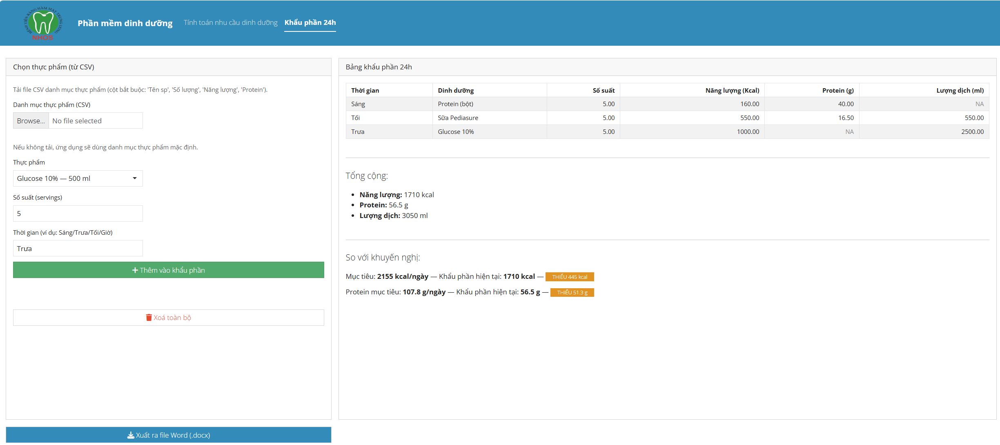

Nutritional App
Shiny app
A shinyApp to calculate the nutritional demand and design a meal plan for patients at the National Hospital of Odonto-Stomatology, Hanoi.
Nutrition App — Functional Description
What the app does
- Collect patient information: name, age, sex, dates (form & surgery), weight, height, diagnosis, phone.
- Capture nutrition plan: nutrition diagnosis, feeding route (multi-select), diet goal, preparation type (multi-select), activity level.
- Compute energy & macro needs: calculates daily energy target (kcal/day) and recommended carbs/protein/fat (grams/day).
- Build a 24-hour meal plan from a CSV food list: select foods, enter servings, and (optionally) a time label.
- Summarize totals: per-item kcal/protein/volume and totals across the day.
- Compare with recommendations: shows UNDER / OVER / ON-TARGET for energy and protein.
- Export a Word report (.docx): includes patient inputs, recommendations, the 24-h plan, totals, and comparison; can include a logo from
www/.
Core calculations
- Basal Metabolic Rate (BMR) — Mifflin–St Jeor
- Male:
10*weight_kg + 6.25*height_cm - 5*age + 5
- Female:
10*weight_kg + 6.25*height_cm - 5*age - 161
- Male:
- Total energy target:
BMR × activity_factor, where activity factor is one of
1.2(sedentary),1.375(light),1.55(moderate),1.725(high). - Macro distribution (defaults): 60% carbs, 20% protein, 20% fat, converted to grams using 4–4–9 kcal/g.
- Meal item math:
Item kcal = servings × (kcal per CSV row)
Item protein (g) = servings × (protein per CSV row)
Item volume (ml) = servings × parsed_ml("Số lượng")(if “Số lượng” includes ml)
CSV food list requirements
Required columns:
- Tên sp (food name)
- Số lượng (portion label, e.g., “300 ml”)
- Năng lượng (kcal per portion)
- Protein (grams per portion)
Optional columns: Lipid, Glucid, Ghi chú
Notes: - Each row is a specific portion (e.g., “CHÁO — 300 ml” and “CHÁO — 500 ml” are two distinct rows). - Numbers may use , or . as decimal separators; the app normalizes them. - Section headers like SOUP, SỮA, DỊCH TRUYỀN are ignored in the picker.
How to use
- Enter patient details and choose activity level → click Calculate to see the daily kcal and macro recommendations.
- Load the food CSV (or rely on
www/foods.csvif provided). - Pick foods from the dropdown, set servings, optionally add a time label (e.g., Breakfast/Lunch/Dinner), then Add.
- Review the table (per-item kcal/protein/ml), totals, and the comparison vs. targets:
- “Goal: X kcal/day — Current plan: Y kcal — UNDER/OVER …”
- “Protein goal: X g/day — Current plan: Y g — UNDER/OVER …”
- Click Export Word to download a
.docxreport.
Word report contents
- Patient information (all inputs)
- Recommended needs (kcal target + carbs/protein/fat in g/day)
- 24-hour meal plan table (items you added)
- Totals & assessment (energy, protein, fluid totals + UNDER/OVER/ON-TARGET messages)
- Logo (if
www/logo-rhm.pngexists)
Implementation highlights
- Robust CSV handling: trims whitespace, normalizes decimals, and parses ml from
Số lượng. - Distinguishes duplicate names by showing “Tên sp — Số lượng” in the picker.
- Comparison badges indicate UNDER / OVER / ON-TARGET for both kcal and protein.
- Export uses officer + flextable for a clean Word layout. ““”
